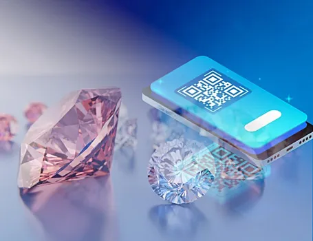

Физики из ФИАН им. П.Н. Лебедева РАН с помощью лазера разработали и совершенствуют технологию создания уникальных меток внутри алмазов. Такие QR- или штрих-коды помогают опознать каждый камень и избежать подделок.
Россия занимает первое место в мире по запасам и производству алмазов: ежегодно на месторождениях в Якутии и Архангельской области добывают в среднем 40 млн карат. Чтобы во время передвижения редких и дорогих камней – от месторождения до ювелирного магазина – подтвердить их происхождение, производители регистрируют алмазы на каждом этапе. Однако существующие технологии отслеживания имеют ряд недостатков.
У всех алмазов есть точечные дефекты и примеси, например, азота, которые при облучении светом дают индивидуальное ответное свечение другого диапазона. Ученые направили ультракороткие импульсы лазера на алмаз и с помощью ставших подвижными атомов азота создали паспорт камня – QR-код с информацией о месте производства и других характеристиках/
Сегодня вместе с мировым лидером в добыче алмазов – компанией «АЛРОСА» – физики проводят фундаментальные исследования для доработки технологии, а также ее распространения на другие драгоценные камни.
|  | |
| Виталий Кведер, академик РАН, научный руководитель Института физики твердого тела имени Ю.А. Осипьяна: | «В каждом драгоценном камне есть свои дефекты, в алмазе наиболее известными и изученными являются NV-центры[1], возникающие при связывании вакансии углерода с атомом азота.
NV-центры обладают многими интересными свойствами, в частности могут использоваться в будущих квантовых компьютерах. Команда исследователей под руководством Сергея Кудряшова обнаружила, что, воздействуя ультракороткими импульсами лазера на алмаз, можно локально изменять концентрации NV-центров и формировать прозрачное люминесцентное микроизображение, например, любой QR-код. Такая маркировка не влияет на ювелирное качество алмаза, ее можно прочитать лишь специальным сканером. Это позволяет записывать в каждом бриллианте его паспорт и отслеживать происхождение камня». |
|---|
Примечания
1. NV-центр или азото-замещённая вакансия в алмазе– это один из многочисленных точечных дефектов алмаза: нарушение строения кристаллической решётки алмаза, возникающее при удалении атома углерода из узла решётки и связывании образовавшейся вакансии с атомом азота.
Дополнительные материалы: